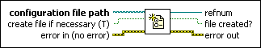

Open Config Data VI
Owning Palette: Configuration File VIs
Requires: Base Development System
Opens a reference to the configuration data found in a platform-independent configuration file.
Format the content of an .ini file correctly when you use this VI.

 Add to the block diagram Add to the block diagram |
 Find on the palette Find on the palette |